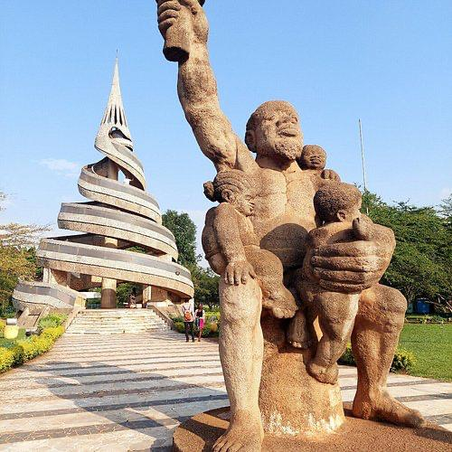
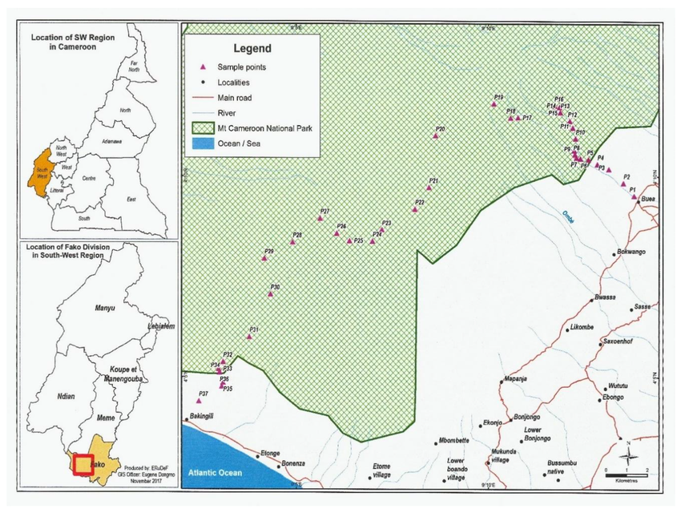

To view destinations and directions to various touristic sites, click the link provided below. You will have access to an online interactive map of Cameroon.

Click the link below to explore Cameroon online and enjoy discovering its beautiful tourist destinations.
Open Cameroon Interactive MapOur interactive map makes it easy to locate some of Cameroon's most beautiful tourist attractions. Whether you are planning a holiday, an educational trip, or an adventure with friends and family, this map provides directions to many exciting destinations.
Zoom in to explore different regions, search for towns, calculate travel routes, and discover nearby hotels, restaurants, museums, waterfalls, mountains, beaches, national parks, and wildlife reserves.
Click any destination above to open its exact location on Google Maps. You can view satellite imagery, calculate travel distances, and receive turn-by-turn directions from your current location.